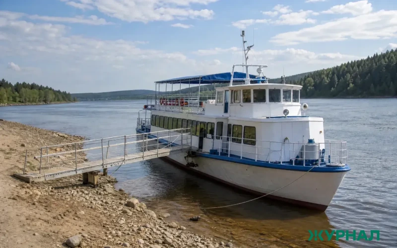
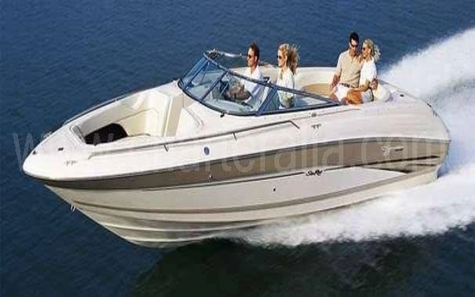
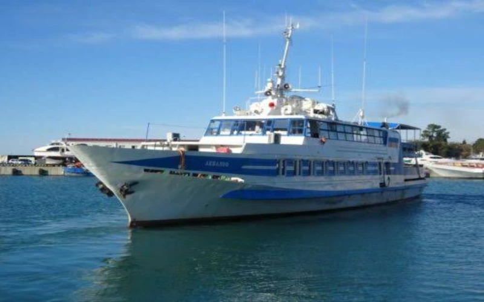

«Заволжец»
Прогулочный теплоход
- Вместимость
- 180 мест
- Год
- 1984, обновлён в 2022
Открытая верхняя палуба, буфет, пандус для колясок.

Прогулочный теплоход
Открытая верхняя палуба, буфет, пандус для колясок.

Скоростной катер
Линия 2, время в пути сокращено на 15 минут.

Экскурсионный теплоход
Панорамные окна, аудиогид на русском и английском.